Before you begin
- Complete B-09: Beneath the Mask.
- Reach WotG 26: Fate in Haze.
Starting point
Gentle Tiger · Bastok Markets [S] · H-6
People in this mission

Walkthrough
- Speak to Gentle Tiger at H-6 to receive the Sack of Victuals.
- Deliver it by speaking to Roderich at E-11 in North Gustaberg [S]. Return to Gentle Tiger for the following scene.
- Enter Xarcabard [S] to receive the Commander’s Endorsement.
- Examine the Forbidding Portal in the northwest of I-7 for a scene. In the complete reference route, examine it again to enter What Price Loyalty in Everbloom Hollow.
- Defeat Klara. Establish a tank quickly, keep her enfeebled, and reserve healing for her sword attacks. Later in the fight, Temblor Blade adds area petrification and disrupts enemy attention; keep a healer able to use Stona outside the area.
- After victory, finish the Xarcabard [S] exit scene and return to Gentle Tiger in Bastok Markets [S] for the Fourth Staff.
Battle and progress notes
- Reference retry: Gentle Tiger replaces a lost Commander’s Endorsement without an added game-day wait.
- This battle is a 30-minute reference encounter. Current retail level-99 and Trust shortcuts are not a verified plan for Zenith’s level-75 setting.
Completion and reward
Intended: Fourth Staff.
What this opens
- The Bastok route’s requirement for continuing WotG 26: Fate in Haze
- B-11: The Truth Lies Hid, after reaching Adieu, Lilisette
Area maps
Open a zone below, then select a map to enlarge it. Match the named floors and grid coordinates in the steps; these are reference area maps, not a live position tracker.
Bastok Markets (S)

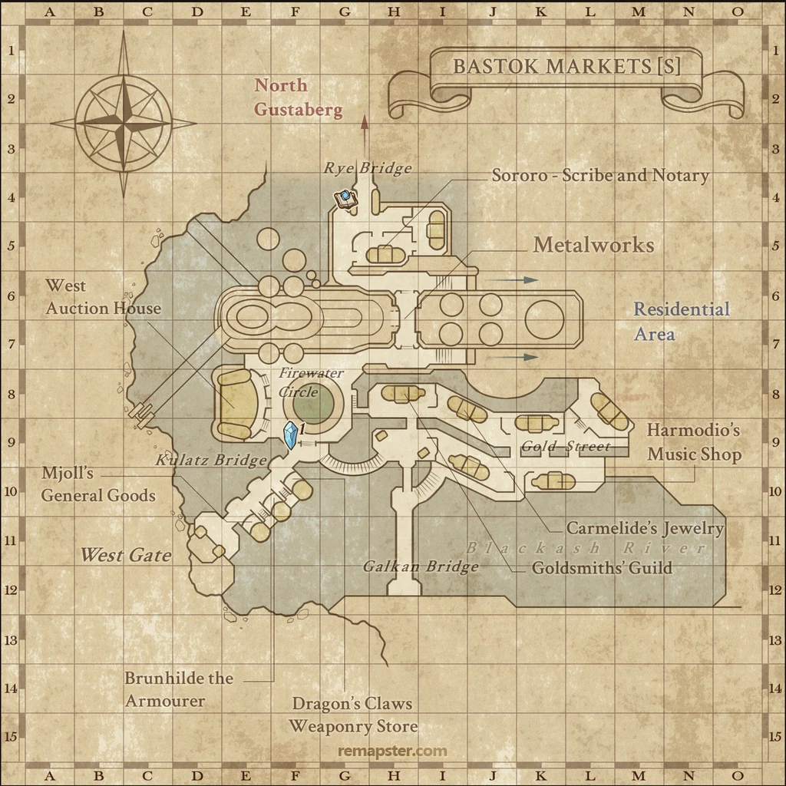

North Gustaberg (S)

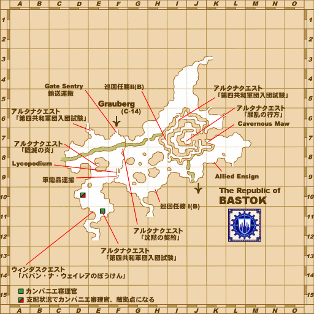
Xarcabard (S)

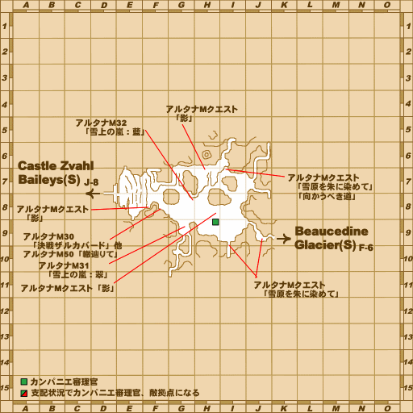
Everbloom Hollow

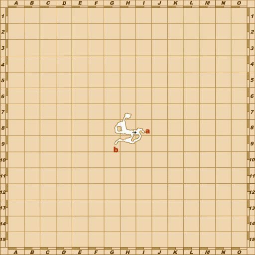

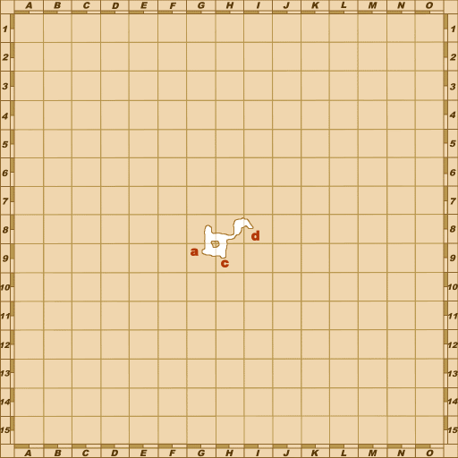

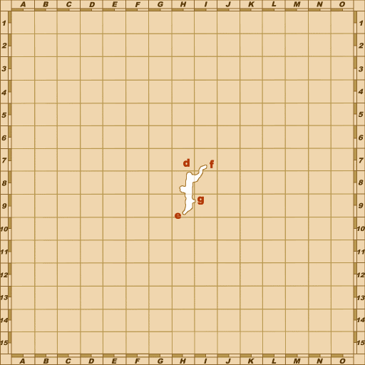

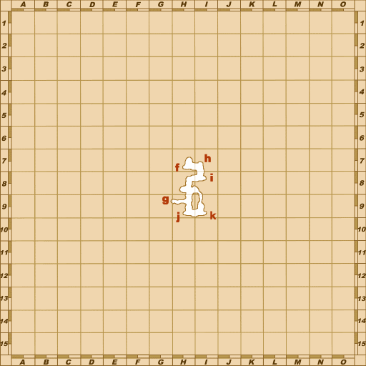

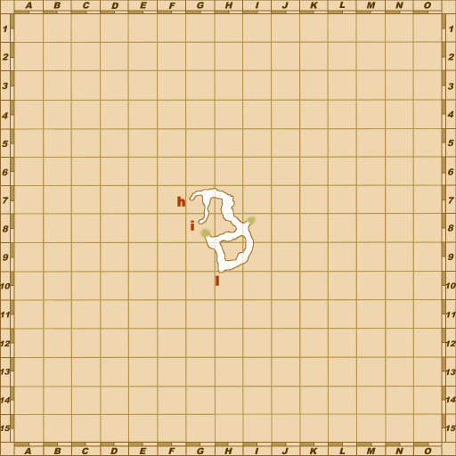

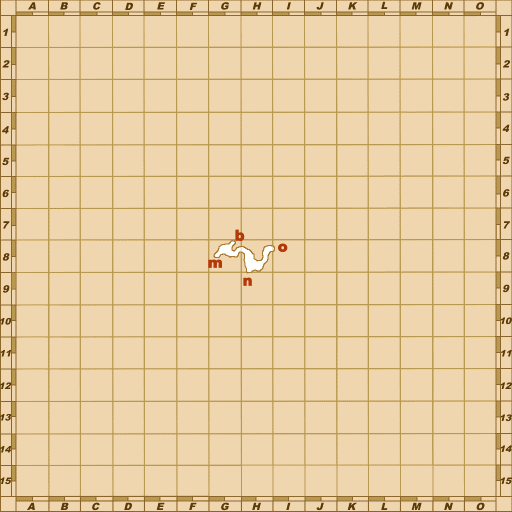

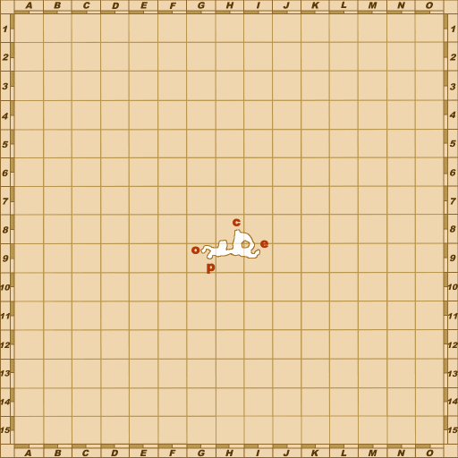

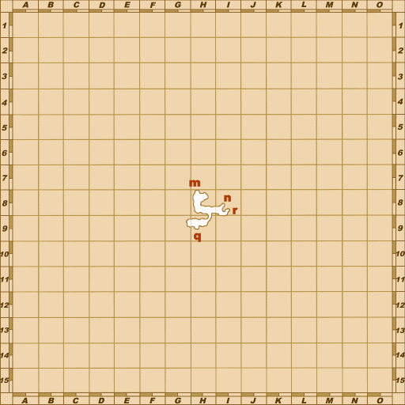

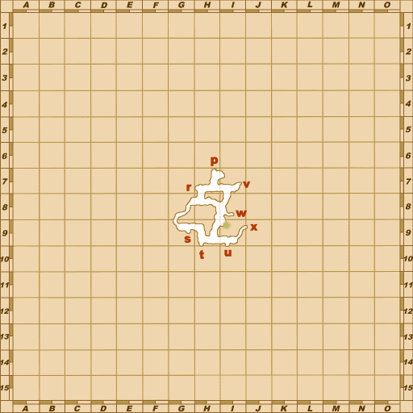

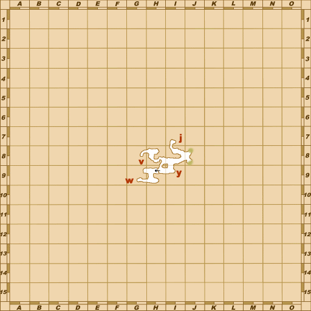

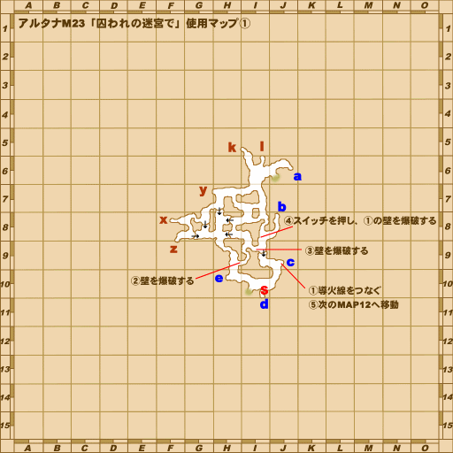

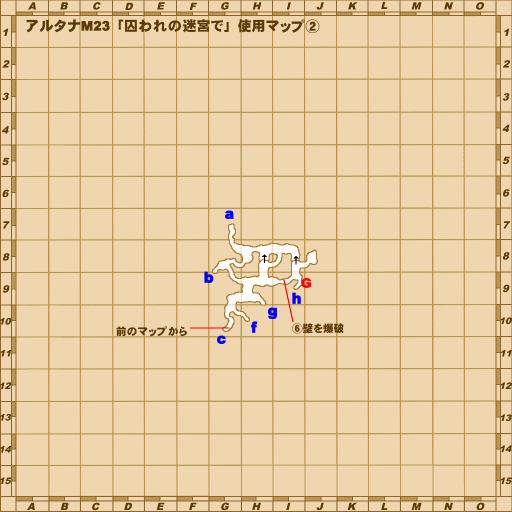

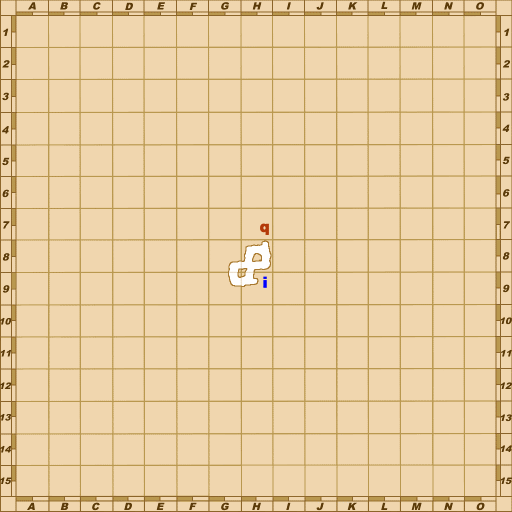

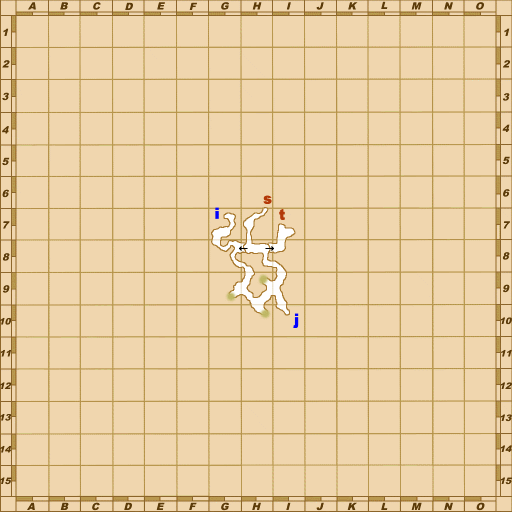

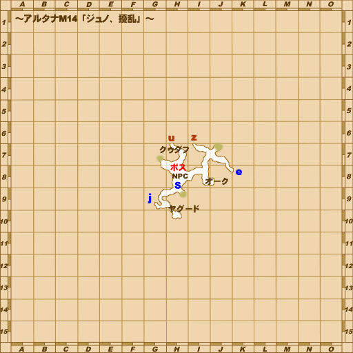

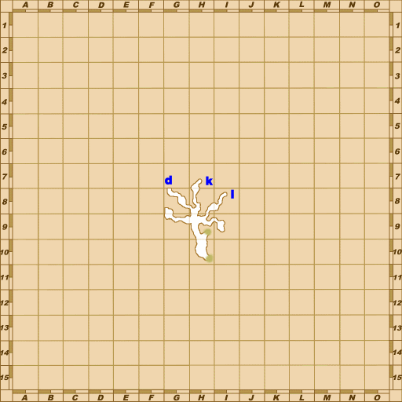

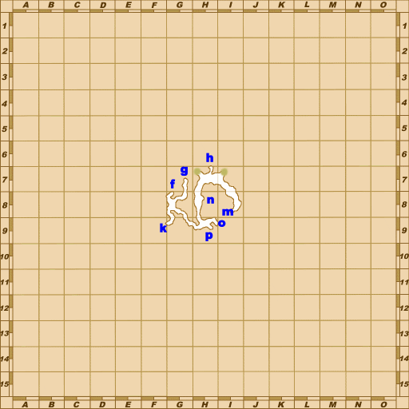

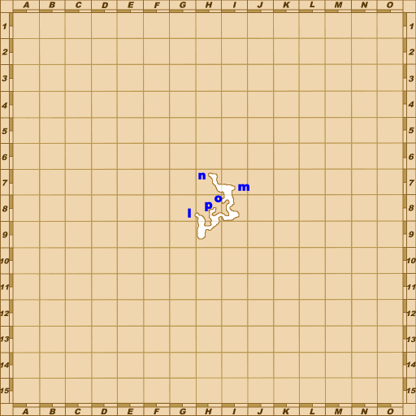
Zone guides
References
Steps are an original summary of the linked walkthrough and reviewed source. Other servers’ bonus rewards are not included. How to read requirements, waits and battlefield notes.